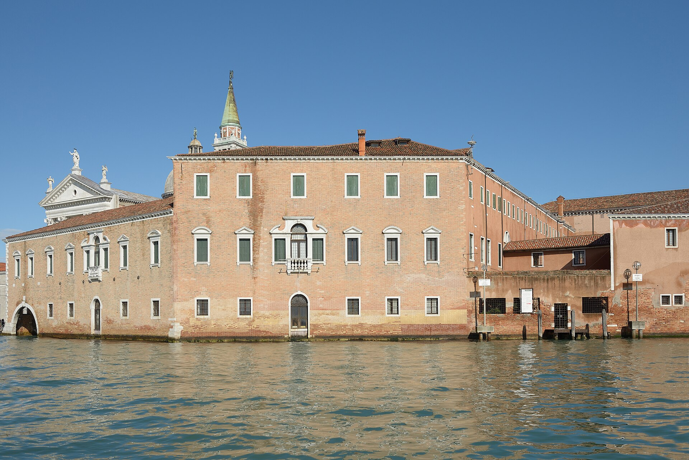
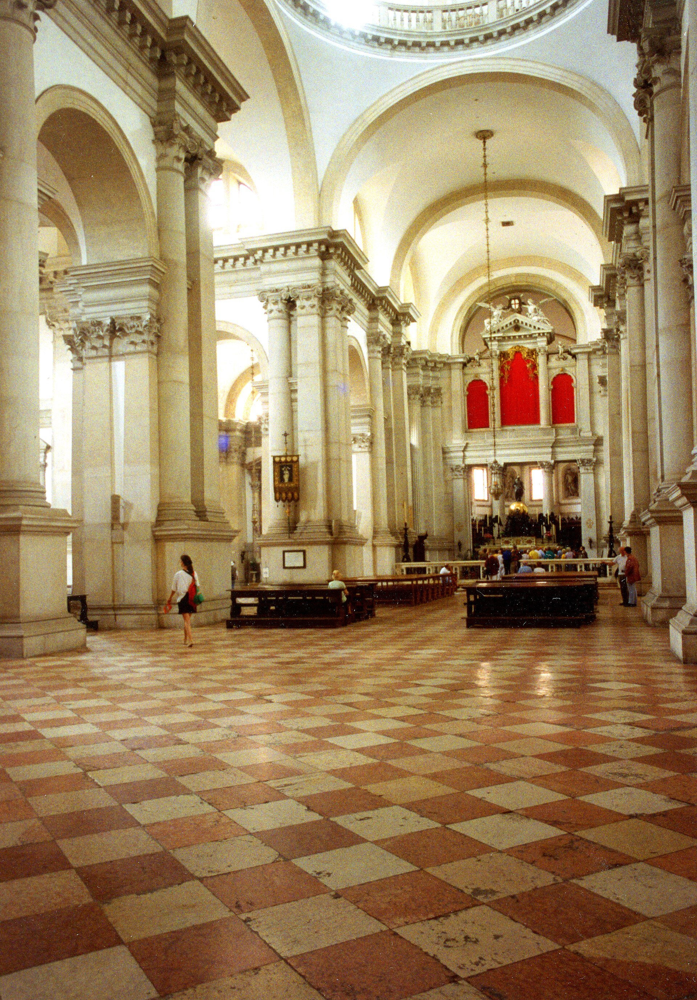
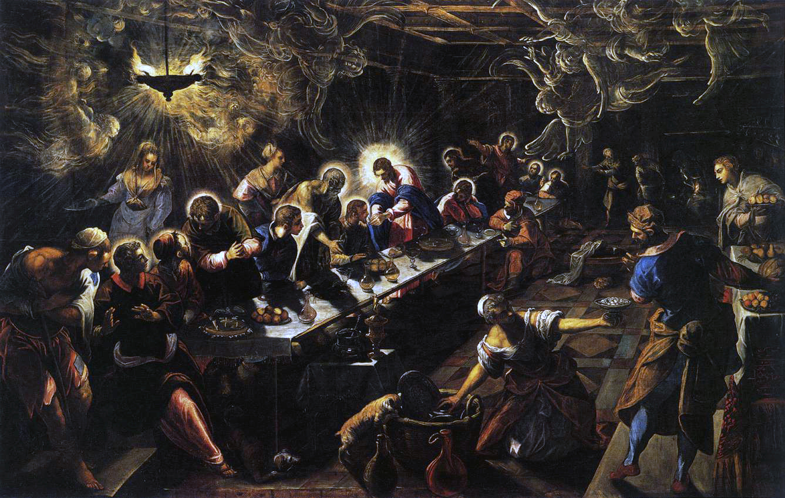
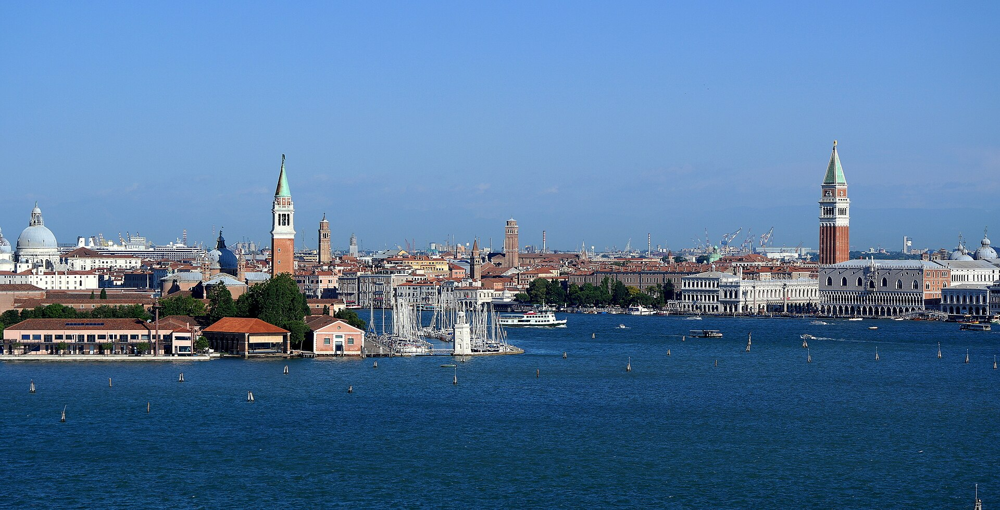

安德烈亚·帕拉第奥设计（1566-1610），把古罗马神庙立面第一次系统地“翻译”给基督教堂。以此为蓝本的《建筑四书》影响了从英国乡村别墅到美国国会大厦的整个西方建筑--这座岛上的白色教堂是那部影响史的现场原点。钟楼电梯顶是拍圣马可湾的最佳机位。
看点路线
Il Percorso
- 1坐 2 号线从 San Zaccaria 出发：船接近岛时正对神庙立面--帕拉第奥要的效果
- 2内殿白墙光影：文艺复兴的“理性教堂”
- 3圣器室两幅丁托列托：《最后的晚餐》与《为门徒洗脚》
- 4钟楼电梯登顶：圣马可湾、安康圣殿与总督宫同框的经典明信片机位
建筑看点
La Chiesa di Palladio · 6 个细节

神庙前立面
帕拉第奥的答案：两层神庙立面叠合（宽的贴侧廊、窄的贴中殿），解决了“教堂高侧窗+低侧廊”的高差矛盾--这个方案被西方教堂反复引用四百年。

白色巴西利卡内殿
无侧廊的“演讲厅式”教堂：白墙、柱式分节、光从穹顶鼓座与高侧窗进入。与同时代罗马耶稣会教堂（Il Gesù，巴洛克起点）的华丽路线形成鲜明对照。

丁托列托《最后的晚餐》
丁托列托的晚期杰作：餐桌斜置、天使与幽灵般的仆人穿行、桌边甚至有一只猫。与达芬奇米兰版对比看--一个画“宣言的一秒”，一个画“日常的一顿饭”。
丁托列托《为门徒洗脚》
曾被拿破仑军队裁切运走、1815 归还的坎坷名作。画面空间的纵深与人物的世俗化处理，是威尼斯画派晚期叙事的代表作。

钟楼与观景
现钟楼 1791 年建成（前身被雷电多次摧毁）。电梯登顶后的 360 度视野：圣马可钟楼、安康圣殿、海关大楼尖塔与整片红色屋顶同框--全威尼斯最著名的全景机位。
千年修道院岛
岛上的本笃会修道院建于 982 年--比教堂本身早六百年。拿破仑时期被改为军火库，1951 年 Cini 基金会重建为文化中心。回廊与图书馆可预约参观。
历史故事
Le Storie
壹石匠之子
1508 年，安德烈亚·帕拉第奥生于帕多瓦，原名安德烈亚·迪·皮耶罗·德拉·贡多拉。13 岁进入石匠作坊学徒，后来成为维琴察一位石作承包商的领班。
三十岁那年，人文主义者吉安·乔治·特里西诺注意到这个在工地雕刻的年轻人，收他为徒、教他拉丁语与古罗马建筑--并以智慧女神帕拉斯为他改名“帕拉第奥”。一个石匠的名字，从此变成一种建筑风格的名词。
今天的英语词典里，Palladian 是形容词--一个出身工匠的人把自己的名字变成了一个文明的品味。
贰神庙立面的“翻译”问题
基督教诞生后，异教神庙的立面一直是建筑师的禁区：如何把“多神庙的山花三角”移植给“一神的教堂”？
文艺复兴的第一代解题者（阿尔伯蒂在曼图亚与佛罗伦萨）用壁画式的拼贴尝试过渡；帕拉第奥在圣乔治给出系统答案--两层神庙立面叠合（宽的覆盖侧廊，窄的对应中殿），既尊重了古代语法又解决了高差。
此后四百年，从伦敦圣保罗到美国乡村教堂，这套“帕拉第奥解法”被反复引用--你来这里看的不是一个立面，是一个范式。
叁《建筑四书》征服世界
1570 年，帕拉第奥出版《建筑四书》（I Quattro Libri dell'Architettura）：图版精确、文字平实、比例可复制--史上第一本“可施工”的建筑教科书。
1715 年英译本出版后引发英国的帕拉第奥主义：从奇斯威克别墅到巴斯城，整代贵族按这本书盖房。托马斯·杰斐逊把自己在弗吉尼亚的蒙蒂塞洛与弗吉尼亚大学校园建成“美利坚的帕拉第奥”--美国国会大厦的语汇也源于这一脉。
圣乔治与《四书》的关系是互证的：书里的图大量取自他的建成作品，而这栋建筑是其中最重要的一页。
肆罗马废墟里的三次测绘
1541 年起，特里西诺带帕拉第奥三次前往罗马：他拿着测绳与量尺在万神殿与斗兽场废墟间爬上爬下，逐一记录古代建筑的柱径、开间与比例。
与他同时代的理论家在书斋里引用维特鲁威，帕拉第奥在工地上量古代的石头--他的图纸因此有“重量感”：每一根线都对应可砌筑的结构。
建筑史家的共识：帕拉第奥的全部秘密是“可施工性”。他的图纸没有一张是画着好看的幻想。
伍一场火灾与两幅丁托列托
圣器室的两幅丁托列托命运多舛：《为门徒洗脚》曾被拿破仑军队裁切运往巴黎（1815 年归还），20 世纪修复时发现边缘被永久裁去；而《最后的晚餐》在二战期间被运离威尼斯避难。
《最后的晚餐》是丁托列托的晚期（1592-94，去世前两三年）作品：餐桌斜置、天使与仆人穿行、桌边甚至有一只猫--与达芬奇版本的“宣言一秒”不同，这画的是“日常的一顿饭”，神性藏进了家务。
两幅画同在小小的圣器室：威尼斯画派的“晚年总结”，安静地挂在修道院的白墙旁边。
陆千年修道院岛
圣乔治岛上的本笃会修道院建于 982 年--比教堂早六百多年。千年里修士在此抄书、唱经、开垦园圃。
1798 年拿破仑没收修道院改为军火库，僧侣散去，图书馆藏品流散。废墟状态持续到 1951 年，工业家维托里奥·奇尼出资重建为 Cini 基金会文化中心（图书馆、艺术史研究所、剧场）。
今天的岛屿是“三明治”：千年修道院的地基 + 帕拉第奥的教堂 + 20 世纪的文化机构。每一层都清晰可辨。
柒钟楼上的三城同框
圣乔治钟楼（1791 年重建）的电梯顶是全威尼斯最著名的观景机位：向北看圣马可钟楼与总督宫，向西看安康圣殿与海关尖塔，向东看丽都与亚得里亚海。
摄影者的黄金时段是黄昏：夕阳从西边的安康圣殿方向落下，圣马可湾的水面变成金色，全部地标在同一个 360 度里。
与圣马可钟楼相比这里人少一半、票价更低、且能拍到圣马可钟楼本身--本地人的推荐从来是“圣乔治看圣马可，而不是圣马可看圣乔治”。
捌白色内墙的争议
圣乔治的内殿在建成之初曾让部分人失望：白墙、素柱、几乎没有装饰--16 世纪的观众习惯了金碧的圣马可与挂满画的厅堂，觉得“太素”。
但帕拉第奥的设计哲学正是如此：建筑本身的几何与光就是装饰--“演讲厅式”教堂（sala）把布道与聆听放在中心位置，这是反宗教改革时代对“清晰传达信仰”的建筑回应。
20 世纪的现代主义者回头惊讶地发现：这栋 16 世纪的教堂看起来像一栋“现代建筑”--白色的力量跨越了四个世纪。
玖帕拉第奥的最后岁月
1580 年 8 月，帕拉第奥在维琴察去世，享年 72 岁--此时圣乔治主体刚完工不久，救主堂也尚未完成。两座威尼斯教堂的尾部工程都由后继者续建。
他一生完成了约 40 座建成作品（绝大多数在维琴察及周边的威尼斯内陆），而他的影响数量是“无限”：Palladian window（帕拉第奥窗）这个词进入了英语词典，成为西方建筑的通用语法之一。
站在圣乔治前想一想：这位石匠之子一生中最大的两件作品都面向水--维琴察的豪宅是事业，威尼斯的教堂是宣言。
拾从采石场到图纸
帕拉第奥的特殊之处在于他从未脱离“工地视角”：青年时期做石匠的经验让他懂得每一种石材的性能与每一道工序的成本。
他的传记作者记录：他即使成为大师后，仍会亲自到采石场挑选大理石。同时代的贵族赞助人抱怨他“抠”，而工匠们爱他--因为他的图纸从不需要“不可能的施工”。
这种务实性让帕拉第奥主义特别适合殖民时代与新大陆：无论在英国庄园还是弗吉尼亚乡下，他的比例体系用当地材料就能复制。这或许是他“征服世界”的真正技术原因。
参观贴士
Consigli Pratici
- 船程即序曲：从 San Zaccaria 坐 2 号线 5 分钟即到--船靠岸的正对视角是立面最佳观看方式
- 钟楼 €8 电梯直达，比圣马可钟楼便宜且人少，视角更佳（能拍到圣马可钟楼本身）
- 教堂内可拍照（禁闪光）；丁托列托两幅在圣器室，弥撒后可能关门
- 下午顺光拍立面；黄昏从 Zattere 岸边拍剪影
顺路同游
Da Non Perdere